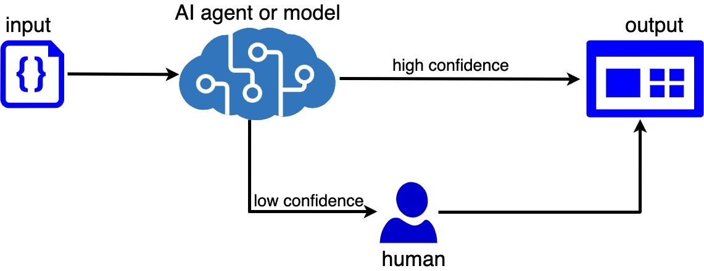

As advancements in artificial intelligence (AI) continue to revolutionize industries, there is a general belief that humans will eventually be replaced by these systems. I always see this statement often but, in my opinion, I don’t think AI will replace humans entirely. While AI could automate many tasks and make decisions based on data, it is not capable of replicating all of the functions of the human brain.
Before sharing my thoughts, let me make one clarification about AI and machine learning (ML). AI and ML are distinct but related. AI is a broad field that encompasses a range of approaches to enable systems to perform tasks that require human-like intelligence, while ML is a specific approach to AI that involves the use of algorithms and statistical models to enable systems to improve their performance on a specific task through experience on the data. ML is a subfield of AI that enable the system to learn and adapt to new data without being explicitly programmed. Other AI subfields include natural language processing, rule-based systems, expert systems, and robotic system automation. In summary, ML is one of the methods for the implementation of AI systems.
Back to my thoughts on why AI will not replace humans entirely. My first thought is that AI has the potential to augment human capabilities and improve efficiency in certain tasks, but it is unlikely to completely replace humans in the near future. Instead, we can expect to see a combination of human and AI skills working together to achieve the best results. There are many tasks that require human skills and judgment that AI is not able to replicate. For example, tasks that involve creative problem-solving, empathy, and abstract thinking are difficult for AI to perform but who knows in the future? I believe AI may even create more jobs for humans by helping humans to focus more on advanced and creative tasks. Humans are now left to develop their skills to be more relevant in the current technological era.
The second thought is that we will always need humans in the loop for several reasons. The "human in the loop" refers to the idea that humans are an essential component of AI systems. While AI systems can automate certain tasks and make decisions based on data, they still require human oversight and input to ensure that they are being used effectively and ethically. In my experience over the last few years as an AI delivery manager, one of the questions business users often ask me is how to ensure that AI/ML systems are secure and produce relevant output. Many business users want to understand what is happening inside the "black box" of these systems, but to be sure that the systems are producing relevant output with a high level of confidence. While most people are accepting of AI, there is a general belief that humans should be able to verify some of the results, especially when the confidence is very low.
Whenever I am discussing AI/ML projects with business owners, I always let them know that ML/AI systems are only as good as the data they are trained on. While these systems can process vast amounts of data at a much faster rate than a human, they are not able to discern the quality or relevance of that data. This is where human expertise is very important. Humans can evaluate the data and ensure that it is accurate, relevant, and diverse, which is essential for the ML/AI system to make informed decisions. Another important role for humans in AI systems is in the design and implementation stage. While these systems can automate certain tasks, they still require human oversight to ensure that they are being used ethically and responsibly. It is only human beings that can evaluate the potential consequences of decisions made by the AI system and how it will be useful for a particular task. As I mentioned earlier, AI systems cannot fully replicate humans' creativity and critical thinking skills. While these systems can certainly assist with data analysis and pattern recognition, there will always be situations where a human touch is required to come up with innovative solutions or tackle complex problems.
An argument can be raised about the human in the loop in AI systems like robotic surgery systems and self-driving cars. Autonomous vehicles can process vast amounts of data and make decisions based on that data, there are certain tasks and situations that require human intervention. Humans have been involved in the development and testing, and certain situations are difficult to replicate in a virtual environment. Human test drivers are often used in these situations to validate the performance of autonomous vehicles in real-world conditions. Self-driving cars may be able to drive themselves in most situations, but there may be certain situations where the vehicle requires human intervention to ensure safety, especially in the case of an emergency or when the system encounters a situation that it is not programmed to handle. Maybe when they see aliens that are not in the data, they trained on 😀.
Humans will always be involved in the planning and execution of surgical procedures because the human surgeon is responsible for planning the procedure and ensuring that it is being performed in a way that is safe and effective. The human surgeon can also make adjustments to the procedure as needed and control the robotic system if necessary. Robotic systems cannot maintain themselves and cannot evaluate their task, human is required for a lot of tasks including operation, maintenance, calibration, and assurance that systems are safe and effective for a particular procedure.
I believe that humans in the loop are an essential component of any AI system, as they ensure that these systems are used effectively, ethically, and in a way that aligns with the predefined tasks. Humans will continue to play critical roles in the development and operation of any AI system. They can ensure that the data used to train these systems is accurate, relevant, and diverse, which is essential for the system to make informed decisions. Without human oversight and input, AI systems may not be able to operate effectively or ethically, which could have negative consequences for the organization and its stakeholders.
Azeez Adebimpe, PhD
January,2023